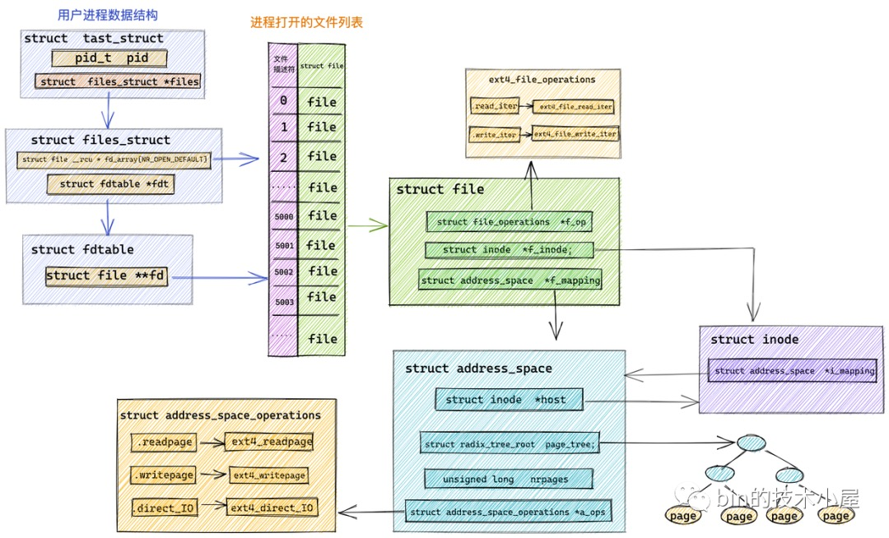

概述
- 本篇梳理 Linux 内核 API
一 各种知名 API
1 register_chrdev()
-
作用: 函数 register_chrdev()调用函数register_chrdev()实现其功能，函数register_chrdev()首先调用函数__register_chrdev_region()创建一个字符设备区，此设备区的主设备号相同，由函数 register_chrdev()的第一个参数决定，次设备号的变化范围是 0 ～ 256，设备区的名字为函数 register_chrdev()的第二个参数，此函数将更改/proc/devices 文件的内容；然后动态申请一个新的字符设备 cdev 结构体变量，对其部分字段进行初始化，初始化完成之后将其加入 Linux 内核系统中，即向 Linux 内核系统添加一个新的字符设备。函数 register_chrdev()调用函数 cdev_alloc()动态申请一个字符设备，调用函数 cdev_add()将其加入 Linux 内核系统中。
-
- 在内核源码中的位置：linux-3.19.3/include/linux/fs.h
-
函数定义格式：
static inline int register_chrdev(unsigned int major, const char *name,
const struct file_operations *fops)
{
return __register_chrdev(major, 0, 256, name, fops);
}
- register_chrdev 输入参数说明
-
- 函数 register_chrdev()有三个输入参数，第一个输入参数是 unsigned int 型的变量，代表动态申请字符设备的主设备号，对于此设备号函数自动赋值为 0。
-
- 第二个输入参数是 char 型的指针，代表申请设备的设备名。
-
- 第三个输入参数是 struct file_operations 结构体类型的指针，代表申请设备的操作函数，通过此结构体包含的函数完成对设备的访问及控制操作
-
register_chrdev 使用案例:
major = register_chrdev(0, "hello", &hello_drv); /* /dev/hello */
2 内核高速缓存
kmem_cache_create()-
- 比如
bdev_cachep = kmem_cache_create("bdev_cache", sizeof(struct bdev_inode),
0, (SLAB_HWCACHE_ALIGN|SLAB_RECLAIM_ACCOUNT|
SLAB_MEM_SPREAD|SLAB_ACCOUNT|SLAB_PANIC),
init_once);
3 关闭中断和打开中断
3.1 关中断
可以通过下面两个函数中的其中任何一个 关闭当前处理器上的所有中断处理， 这两个函数定义在 <asm/system.h>中:
void local_irq_save(unsigned long flags);
void local_irq_disable(void);
- local_irq_save 的调用把当前的中断状态（开或关）保存到 flags 中，然后禁用当前处理器上的中断。
- local_irq_disable 不保存状态而关闭本地处理器上的中断发送; 只有我们知道中断并未在其他地方被禁用的情况下，才能使用这个版本。
3.1 开中断
可通过如下函数打开中断:
void local_irq_restore(unsigned long flags);
void local_irq_enable(void);
- local_irq_restore 将 保存的 flags 状态值恢复（即 local_irq_save 的入参 flag ）, 恢复之前的状态（开或关）。
-
local_irq_enable 则无条件打开中断。
-
local_irq_save 和 local_irq_restore 会更安全。
没有方法全局禁用整个系统的所有中断。 内核开发者认为关闭所有中断的代价太高，因此没有必要提供这个能力。
4 获取单 CPU 变量
-
struct softnet_data *sd = &__get_cpu_var(softnet_data) -
__napi_schedule 函数
void __napi_schedule(struct napi_struct *n)
{
unsigned long flags;
local_irq_save(flags);
____napi_schedule(&__get_cpu_var(softnet_data), n);
local_irq_restore(flags);
}
二 各种知名 struct
1 内核层 3 种实际设备
- 字符设备
struct cdev - 块设备
struct block_device - 网络设备
struct net_device
从代码的角度来看，整个路径包含的过程基本可以概括为:
虚拟文件系统-->块设备实际文件系统-->通用块层-->I/O scheduler-->块设备驱动程序
描述块设备的数据结构有两个，一个是struct block_device,用来描述一个块设备或者块设备的一个分区；
另一个是struct gendisk，用来描述整个块设备的特性。
对于一个包含多个分区的块设备，struct block_device 结构有多个,每个分区一个 block_device, 整个设备也对应一个 block_device,而 struct gendisk 结构永远只有一个。
2 其他虚拟设备
- 内核驱动框架: 总线
struct bus_type、设备struct device、驱动struct device_driver -
- 引发出各种虚拟设备
struct platform_device、struct pci_device、struct phy_device
- 引发出各种虚拟设备
2 struct address_space 和 vm_area_struct 之间的关系
- 一个文件只能有 一个 address_space 数据结构, 表示 Page Cache 的一个实例。（假设 Page Cache 是有多个实例组成, 分两层看，上层的单个实例就是一个 address_space 实例，底层的单个实例就是一个一个 struct page)
-
- struct address_space 里有一个 page_tree 成员，是所有 page 组合成的一个树, 如下图右下角

- 一个文件可能有多个 vm_area_struct
三 各类风格
1 描述符 + operations 风格
- Linux 内核总是各种
描述符+operations风格 . -
- 比如内核中不同的协议是使用
struct proto结构体表示的, 比如 tcp 协议是使用struct proto tcp_prot表示
- 比如内核中不同的协议是使用
-
- 对应协议的操作能力是用结构体
struct proto_ops表示, 比如 tcp 协议的一些操作是用struct proto_ops inet_stream_ops结构体表示.
- 对应协议的操作能力是用结构体
-
- 比如经典的
file+file_operations
- 比如经典的
-
- 比如经典的
platform_device+file_operations,net_device+net_device_ops
- 比如经典的
2 框架风格 方便扩展、屏蔽底层细节
2.1 屏蔽底层细节
- Linux 内核总是使用汇编语言来抽象不同 CPU 平台细节，然后真正的主逻辑/主框架使用 C 语言实现。然后后续新的平台出现时就必须/只要遵守 C 语言实现的这个主框架，即可加入对 Linux 的支持, 方便扩展.
- 驱动程序也是如此, 首先需要实现特定于硬件的函数, 然后嵌入到内核事先定义好的结构体中. 比如
struct napi_struct, 定义在include/linux/netdevice.h
struct napi_struct {
/* The poll_list must only be managed by the entity which
* changes the state of the NAPI_STATE_SCHED bit. This means
* whoever atomically sets that bit can add this napi_struct
* to the per-CPU poll_list, and whoever clears that bit
* can remove from the list right before clearing the bit.
*/
struct list_head poll_list;
unsigned long state;
int weight;
int defer_hard_irqs_count;
unsigned long gro_bitmask;
int (*poll)(struct napi_struct *, int);
#ifdef CONFIG_NETPOLL
/* CPU actively polling if netpoll is configured */
int poll_owner;
#endif
/* CPU on which NAPI has been scheduled for processing */
int list_owner;
struct net_device *dev;
struct gro_list gro_hash[GRO_HASH_BUCKETS];
struct sk_buff *skb;
struct list_head rx_list; /* Pending GRO_NORMAL skbs */
int rx_count; /* length of rx_list */
unsigned int napi_id;
struct hrtimer timer;
struct task_struct *thread;
/* control-path-only fields follow */
struct list_head dev_list;
struct hlist_node napi_hash_node;
};
-
- 这里的 poll 函数就是特定于网卡硬件的.
2.2 元素外包装, 方便扩展
- Linux 内核不同子系统之间总是留有一层扩展性，比如
wait_queue等待队列里的元素是wait_queue_t,代表等待实体, 但其实大部分场景下等待实体都是进程task_struct. 比如调度器调度的也是调度实体，其实大部分场景调度实体都是task_struct.
2.3 内核的实现经常是分上中下 3 层
- 然后给一些数据结构让实现者填充
4 链表和数组的区别
- 链表中每个元素可以分散在物理内存空间中，不一定要连续
- 数组中所有的元素都说紧挨着的、连续的。当数组大的时候，就不一定要那么多连续的物理内存。
5 描述符纵向使用链表关联横向使用指针关联
5.1 mm_struct 和 vm_area_struct
-
每个 vm_area_struct 是一个连续的虚拟地址范围，这些区域不会互相重叠。 mm_struct 里面有一个单链表
mmap，用于将 所有 vm_area_struct 串联起来； 另外还有一颗红黑树 mm_rb ，vm_area_struct 根据起始地址挂在这颗树上。使用红黑树可以根据地址，快速查找一个内存区域。 -
比如 mm_struct 关联到 vm_area_struct，vm_area_struct 是有一个双向链表的，然后 mm_struct 中只要有一个指针指向链表头元素即可。
内核中其实是通过一个 struct vm_area_struct 结构的双向链表将虚拟内存空间中的这些虚拟内存区域 VMA 串联起来的。
vm_area_struct 结构中的 vm_next ，vm_prev 指针分别指向 VMA 节点所在双向链表中的后继节点和前驱节点，内核中的这个 VMA 双向链表是有顺序的，所有 VMA 节点按照低地址到高地址的增长方向排序。
双向链表中的最后一个 VMA 节点的 vm_next 指针指向 NULL，双向链表的头指针存储在内存描述符 struct mm_struct 结构中的 mmap 中，正是这个 mmap 串联起了整个虚拟内存空间中的虚拟内存区域。
struct mm_struct {
struct vm_area_struct *mmap; /* list of VMAs, 只是指向链表中的一个元素 */
}
在每个虚拟内存区域 VMA 中又通过 struct vm_area_struct 中的 vm_mm 指针指向了所属的虚拟内存空间 mm_struct。
5.2 files_struct 和 struct file
- files_struct 中有指针指向一个 file 数组, 如下图所示
5.3 指针指向链表和数组时，都只需要指向其头一个元素
-
这就是为什么结构体和结构体互相关联的时候, 都只需要加一个指针，该指针是其他数据结构指针. 指过去之后自然能够找到其他数据结构组成的链表或者数组
-
举例子来说, 上面提到的内存描述符 mm_struct, 需要找到所有 vm_area_struct 链表时，它的做法是 mm_struct 内有一个成员指向该链表，这个成员实际实现时是指向 vm_area_struct 链表的头元素.
-
还有底层的物理页帧是用数组管理的(因为在同一个 NUMA Node 节点内的所有物理内存都是连续的), 在内核数据结构表示时 node 节点内有一个指针指向其所有 page 组成的数组, 实际实现时也是指向该数组的头元素.
5.4 socket 对象的简写
- 内核代码中
sock代表struct socket的一个实例,sk代表struct sock的一个实例
四 各种注册技能
1 软中断注册到一个数组
-
open_softirq是注册到softirq_vec数组里的 -
- 使用方式
open_softirq(NET_TX_SOFTIRQ, net_tx_action);
open_softirq(NET_RX_SOFTIRQ, net_rx_action);
-
- 定义
kernel/softirq.c
void open_softirq(int nr, void (*action)(struct softirq_action *))
{
softirq_vec[nr].action = action;
}
2 文件系统 type 是注册到链表
register_filesystem(&dev_fs_type);//注册 dev_fs_type 文件系统，即将 dev_fs_type 添加到内核全局总链表中 file_systems
/**
* register_filesystem - register a new filesystem
* @fs: the file system structure
*
* Adds the file system passed to the list of file systems the kernel
* is aware of for mount and other syscalls. Returns 0 on success,
* or a negative errno code on an error.
*
* The &struct file_system_type that is passed is linked into the kernel
* structures and must not be freed until the file system has been
* unregistered.
*/
int register_filesystem(struct file_system_type * fs)
{
int res = 0;
struct file_system_type ** p;
if (fs->parameters &&
!fs_validate_description(fs->name, fs->parameters))
return -EINVAL;
BUG_ON(strchr(fs->name, '.'));
if (fs->next)
return -EBUSY;
write_lock(&file_systems_lock);
p = find_filesystem(fs->name, strlen(fs->name));
if (*p)
res = -EBUSY;
else
*p = fs;
write_unlock(&file_systems_lock);
return res;
}
3 多个 NUMA Node 使用链表相连
在内核中使用struct pg_data_t表示一个 NUMA Node, 对于 UMA 架构 其实相当于只有一个 Node, 对于 NUMA 架构相当于有多个 Node, 多个 Node 形成一个链表.
五 各种常用的宏
1 current 宏
内核代码中，current 总是指向当前的进程的 task_struct
2 container_of 宏
是一个在 Linux 内核中常用的宏，通过结构体的某个成员变量地址找到该结构体的首地址
如下图案例，通过单链表组织起来的若干个结构体，当已知链表头遍历每个节点时，list 作为结构体成员，可使用 container_of 宏定义追溯到该结构首地址，进而可访问结构体中所有成员。

例如下面通过 inode 结构体获取对应的 cdev 结构体, 然后将 file 结构体的 private_data 成员赋值给它, 是一个典型的 open 操作的实现方法.
cd = container_of(inode->i_cdev,struct mycdev,cdev);
file->private_data = cd;
3 INIT_LIST_HEAD 用于在运行时初始化一个链表
- INIT_LIST_HEAD(ptr) 这个宏通常用于在运行时初始化一个链表
4 PFN 和物理页结构体 struct page 之间的相互转换的宏
内核提供了两个宏来完成 PFN 与 物理页结构体 struct page 之间的相互转换。它们分别是 page_to_pfn 与 pfn_to_page
六 各类有意思问题
1 为什么内核代码中很多返回值都都要加个负号
比如
page = __get_free_pages(GFP_KERNEL,3);
if (!page){
/*没有足够的内存：你必须处理这种错误！*/
return -ENOMEM;
}
static int fs_name(unsigned int index, char __user * buf)
{
struct file_system_type * tmp;
int len, res;
read_lock(&file_systems_lock);
for (tmp = file_systems; tmp; tmp = tmp->next, index--)
if (index <= 0 && try_module_get(tmp->owner))
break;
read_unlock(&file_systems_lock);
if (!tmp)
return -EINVAL;
/* OK, we got the reference, so we can safely block */
len = strlen(tmp->name) + 1;
res = copy_to_user(buf, tmp->name, len) ? -EFAULT : 0;
put_filesystem(tmp);
return res;
}
A 如何理解函数返回指针
内核中的函数通常以返回指针的形式来传递调用函数后执行的结果，返回值指针有三种结果：
- （1）调用成功则返回一个有效指针
- （2）调用失败返回 NULL，例如 malloc、kmalloc、vmalloc
- （3）调用失败返回错误信息指针（无效指针）
我们就是通过这个错误指针来传递有关错误的信息。